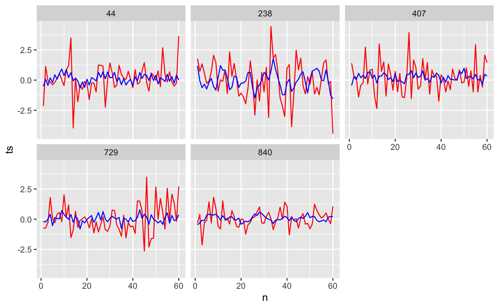

library(tidyverse) #> ── Attaching packages ────────────────────────────────────────────────── tidyverse 1.2.1 ── #> ✓ ggplot2 3.3.2 ✓ purrr 0.3.4 #> ✓ tibble 3.0.3 ✓ dplyr 1.0.0 #> ✓ tidyr 1.1.0 ✓ stringr 1.4.0 #> ✓ readr 1.3.1 ✓ forcats 0.4.0 #> ── Conflicts ───────────────────────────────────────────────────── tidyverse_conflicts() ── #> x dplyr::filter() masks stats::filter() #> x dplyr::lag() masks stats::lag() library(janitor) #> #> Attaching package: 'janitor' #> The following objects are masked from 'package:stats': #> #> chisq.test, fisher.test library(tsrecipes) library(recipes) #> #> Attaching package: 'recipes' #> The following object is masked from 'package:stringr': #> #> fixed #> The following object is masked from 'package:stats': #> #> step
tsdb <- tsrecipes::prices
prepped <- recipe(tsdb) %>% step_dct(ts, k = 8) %>% prep() tsdb_dct <- bake(prepped, tsdb) tsdb_dct #> # A tibble: 965 x 11 #> id class ts dct_1_ts dct_7_ts dct_8_ts dct_12_ts dct_22_ts dct_37_ts #> <int> <fct> <lis> <dbl> <dbl> <dbl> <dbl> <dbl> <dbl> #> 1 1 no_i… <dbl… 13.1 -5.75 -8.30 -6.06 -11.5 3.94 #> 2 2 no_i… <dbl… 14.2 7.79 -0.0165 7.74 5.18 -1.36 #> 3 3 no_i… <dbl… -5.30 -1.32 10.9 5.62 -1.08 1.07 #> 4 4 no_i… <dbl… -5.77 0.0631 6.93 -3.44 -6.54 4.71 #> 5 5 no_i… <dbl… 12.1 -1.37 5.97 3.54 3.31 11.0 #> 6 6 no_i… <dbl… 6.82 8.62 7.31 1.79 0.589 5.78 #> 7 7 no_i… <dbl… 3.23 5.07 -3.45 4.87 3.53 -11.5 #> 8 8 no_i… <dbl… -20.3 -12.4 4.90 2.37 -2.01 20.2 #> 9 9 no_i… <dbl… -4.48 -11.9 1.05 -16.4 -38.7 7.05 #> 10 10 no_i… <dbl… -6.88 16.6 -37.6 -2.90 24.9 37.6 #> # … with 955 more rows, and 2 more variables: dct_41_ts <dbl>, dct_53_ts <dbl>
trained_step <- prepped$steps[[1]] tsdb_recon <- tsdb_dct %>% reconstruct("ts", trained_step, starts_with("dct_"))
set.seed(103) tsdb_recon %>% sample_n(5) %>% unnest(c(ts, ts_recon, n)) %>% ggplot(aes(n)) + geom_line(aes(y = ts, group = id), color = "red") + geom_line(aes(y = ts_recon, group = id), color = "blue") + facet_wrap(~id)
